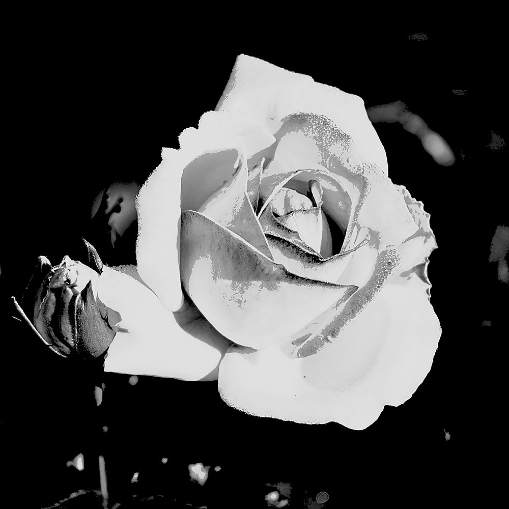

Rose Thorns
Cedar - They/Them


The prof running the LGBTQ+ support group said that I’ve made a ton of progress this year. Which, I hate to admit it, but my life has changed and I’ve actually started being happier. I’m less afraid of other people and their opinions of me. I’ve even been wearing the clothes that make me feel good about myself regularly at school.
Nothing has really changed since my last entry though. Still spending tons of time with Finn and Vega, my crush on Finn...
(Click to continue...)
This has been the best summer of my life! I’ve spent every day that I’ve had free with either Vega or Finn or both if they are available! I was so prepared for them to get sick of me after all of this, but nope, we’re still doing cool shit together.
Finn and I have been playing games, both video games and board games. Vega has been cooking this amazing food for us, and I swear I think I’ve gained 10 pounds from eating properly...
(Click to continue...)
Alright, Finn’s taking a nap in my bed. I’m being totally normal about the whole thing too, not freaking out at all. (Why am I even lying to myself in this journal, I’m freaking out!)
Everyone’s finals have happened and classes are over for the summer. I assumed I’d have a boring four months of playing video games, watching anime, and working, like I’d expect. But what did I find outside my dorm door this morning? A very excited Finn! He decided that we were going...
(Click to continue...)
Oh fuck. Oh fuck! Fuck! Fuck!! Fuck!!! Fuck!!!
I like Finn! What the hell am I doing?! I JUST fucking said that I would never let myself fall for someone again! But here I am, already obsessed with him.
We went to the arcade together, just the two of us. This was the first time we’d hung out alone, aside from going to group together. And I was looking at him, and it all hit me at once! He’s so wonderful and here I am, already...
(Click to continue...)
Well, I just spent the last week self-destructing. Again. I fucking skipped school! Why would I do that?
Of course, I know why I would do something like that. Anything to push Vega and Finn away. And in normal circumstances, shit like that would work. But these two… seem to genuinely care about me.
Vega and Cedar came to my work looking for me. They came to tell me that they were there to support me in whatever way I needed while I went through everything I was struggling...
(Click to continue...)
I am such a fucking fool. What the fuck is wrong with me?! Why would I ever get my hopes up with Ezra. This asshole got a fucking boyfriend. Of course he did, he’s great, what am I even saying?!
I’m completely unlovable. Why would I ever think that someone like him would like me? Why would I think that? I can’t handle it. I refuse to let myself fall in love ever again. I refuse. I cannot take another heartbreak. I’ve gotten my hopes up far too many times and I’m done. I’m...
(Click to continue...)
I’ve been hanging out with Vega, Finn, and Rowan some more this last month. We meet up at school whenever we have a free moment, usually grabbing lunch together in between classes.
Finn also comes and harasses me while I’m at work. I sorta tell him that I hate it, but it’s time I actually cherish. He cares enough about me to come by and entertain me while I’m at my...
(Click to continue...)
The other day Vega managed to convince me to go to her board game night with Finn, and her… friend? I guess? Rowan. (Rowan is totally her boyfriend, but she refuses to admit to me that she likes him.)
Anyways! We hung out at their apartment and played Monopoly. This was my first time formally meeting Rowan. He seems chill, but he doesn’t seem to like me all that much. And Finn...
(Click to continue...)
Alright. So. Where do I even fucking start?
Finn, that’s the guy who is practically stalking me, that’s his name. He sent in recon. Her name is Vega, sweet chic with the brightest platinum blond hair. Wicken sense of fashion too, almost thought she looked better than I did.
Anyways, she came in and ambushed me. She prompted...
(Click to continue...)
He’s fucking back! That guy from last week? Yeah! He came back! He does not let go of anything, istfg. Like, what am I supposed to do? He’s basically harassing me at this point, right? I’ve told him to fuck off and he’s not taking the hint.
I guess a part of me knows that this is what I want though… I’ve been begging the world to give me someone who cares...
(Click to continue...)
I don’t understand what the fuck is wrong with me. Why do I always do this?
We all know that I go to this stupid queer support group at the request of my therapist. She thinks that getting to know people my age would help me, but what good does that do if everyone hates me?
Today, they just kept pushing me and pushing me until I snapped. I might have gone...
(Click to continue...)